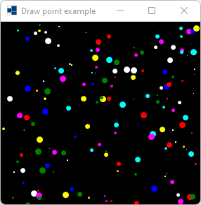
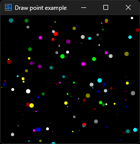
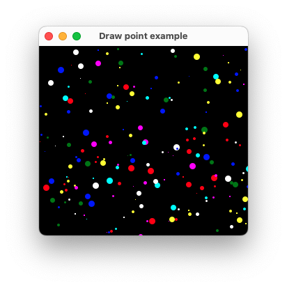
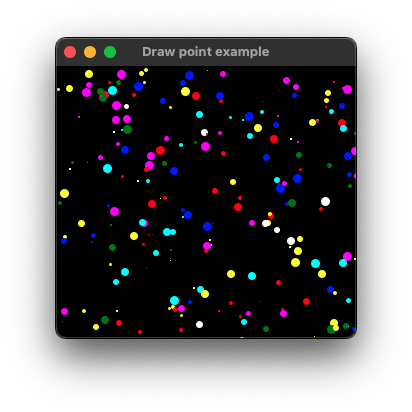
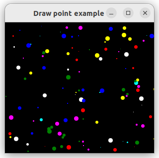
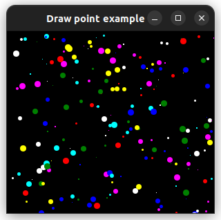

|
xtd
0.2.0
|
Loading...
Searching...
No Matches
draw_point.cpp
shows how to draw point in paint event using xtd::drawing::graphics::draw_point.
- Windows
- 

- macOS
- 

- Gnome
- 

#include <xtd/forms/application>
#include <xtd/forms/form>
#include <xtd/random>
using namespace std;
using namespace xtd;
using namespace xtd::drawing;
using namespace xtd::forms;
namespace draw_point_example {
struct colored_point {
point location;
int width = 0;
};
public:
form1() {
text("Draw point example");
generate_colored_points_timer.interval_milliseconds(200);
generate_colored_points_timer.tick += event_handler(*this, &form1::generate_colored_points);
generate_colored_points_timer.start();
}
protected:
form::on_paint(e);
e.graphics().clear(color::black);
for (auto colored_point : colored_points)
e.graphics().draw_point(pen(colored_point.color, as<float>(colored_point.width)), colored_point.location);
}
private:
void generate_colored_points() {
static vector colors = {color::red, color::green, color::blue, color::yellow, color::cyan, color::magenta, color::white};
for (auto& colored_point : colored_points)
colored_point = {point(random.next(client_size().width()), random.next(client_size().height())), colors[random.next(colors.size())], random.next(1, 10)};
invalidate();
}
vector<colored_point> colored_points;
timer generate_colored_points_timer;
};
}
auto main()->int {
application::run(draw_point_example::form1 {});
}
colors for all the standard colors. This class cannot be inherited.
Definition colors.h:26
Defines an object used to draw lines and curves. This class cannot be inherited.
Definition pen.h:35
Represents an ordered pair of integer x- and y-coordinates that defines a point in a two-dimensional ...
Definition point.h:54
Represents a window or dialog box that makes up an application's user interface.
Definition form.h:52
Provides data for the xtd::forms::control::paint event.
Definition paint_event_args.h:29
Implements a timer that raises an event at user-defined intervals. This timer is optimized for use in...
Definition timer.h:36
Represents a pseudo-random number generator, a device that produces a sequence of numbers that meet c...
Definition random.h:37
generic_event_handler<> event_handler
Represents the method that will handle an event that has no event data.
Definition event_handler.h:33
The xtd::drawing namespace provides access to GDI+ basic graphics functionality. More advanced functi...
Definition actions_system_images.h:11
The xtd::forms namespace contains classes for creating Windows-based applications that take full adva...
Definition about_box.h:13
The xtd namespace contains all fundamental classes to access Hardware, Os, System,...
Definition system_report.h:17
Generated on Tue Sep 5 2023 22:25:16 for xtd by Gammasoft. All rights reserved.